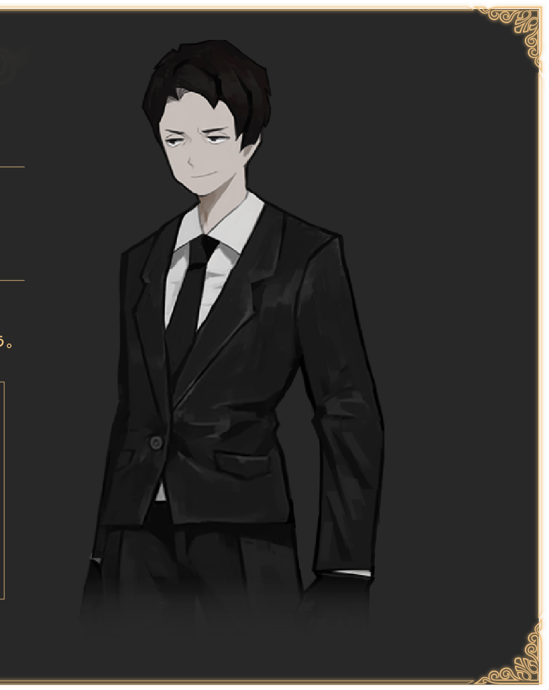
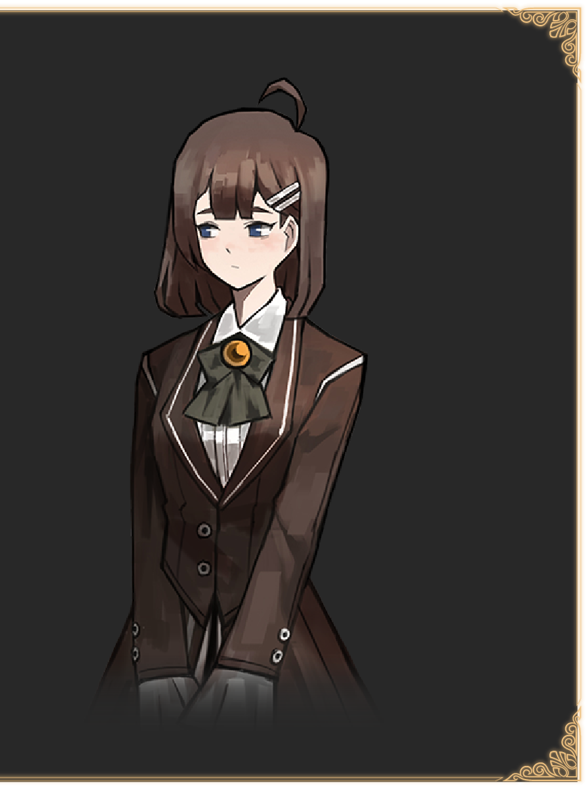

図書館の館長兼司書。 人間のような見た目をしているが実際は機械である。人間になるために「たった一つの完璧な本」を求めている。 図書館が発生する原因を何か知っているようだが....？ 
突如として開館前の図書館に現れた自称ド底辺フィクサー。 なぜか都市のさまざまな組織・現象について非常に詳しいようだ。
歴史の階指定司書。他の階の司書と同じくアンジェラの過去について何かしら知っているようだが...？
文学の階指定司書。アンジェラに対して多少やわらかい態度をとっている。自分の過去について何か思うところがあるようだ。 
技術科学の階指定司書。めちゃくちゃ毒舌、ただし優しいところもある。アンジェラの起こしたある行動に対して怒っている。

芸術の階指定司書。飲んだくれ。ローランと酒で盛り上がる。